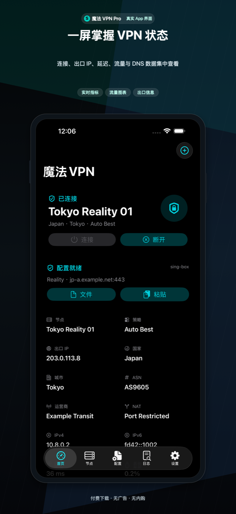
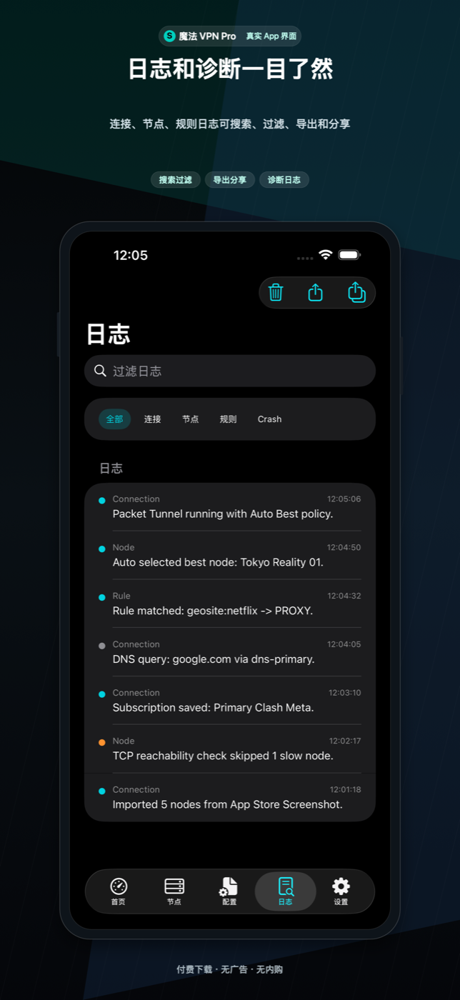

SpellVPN Tool · iOS / Mac
SpellVPN Tool 是 iOS 与 macOS 的付费无广告配置客户端，不提供服务器节点、预设来源目录或节点服务内购订阅。用户需要导入自己有权使用的配置、节点或订阅 URL。客户端可依据导入配置建立 VPN 连接，并非仅离线查看文件的工具。

新手从这里开始
最常用的操作只有 5 步：下载 App → 准备订阅 URL → 导入 → 选择线路 → 连接。下面按手机里的实际按钮写清楚，照着操作就可以开始使用。
Tool：付费、无广告，仅使用用户自行提供的配置。iOS Ultra：含广告，可选订阅可去广告，并提供精选来源和专属线路。
官网说明更新于 2026 年 9 月 12 日
SpellVPN Tool 是 iOS 与 macOS 的付费无广告配置客户端，不提供服务器节点、预设来源目录或节点服务内购订阅。用户需要导入自己有权使用的配置、节点或订阅 URL。客户端可依据导入配置建立 VPN 连接，并非仅离线查看文件的工具。
SpellVPN Ultra 是包含广告和可选 App Store 自动续期订阅的 iOS 版本。有效订阅可去除广告，并访问服务提供的“精选来源（Curated Sources）”和“专属线路（Exclusive Lines）”。Ultra 也支持用户自行导入。服务提供的配置是实际订阅权益，不能只概括为去广告。
官网说明更新于 2026 年 9 月 12 日
SpellVPN Tool 会访问用户导入配置中的订阅、DNS 与服务器端点。SpellVPN Ultra 使用精选来源或专属线路时，还会向 apixx.spellv.com 请求服务内容，并可能继续访问返回的订阅和节点端点。远端服务会收到处理请求所需的网络信息，例如 IP 地址与 HTTP 请求元数据。VPN 流量由当前配置中选用的服务器处理。这些请求与 App Store 购买处理、Ultra 广告请求分别发生。
在 SpellVPN Ultra 中打开“设置 → 订阅 → Ultra 订阅”，查看套餐、购买或恢复购买。拥有有效权益后，可从正常界面访问精选来源或专属线路；“我的导入”与服务提供的内容分别管理。购买或来源加载失败时，请向支持人员提供 App 版本和错误提示，不要发送密码或完整订阅 URL。
周、月、季、年自动续期套餐由 Apple 处理。实际价格、周期和续期条款以 App Store 购买确认页为准；可在 App 内恢复符合条件的购买，并在 Apple 账户中管理订阅。来源内容和连接情况可能变化，订阅不代表永久节点、无限流量或特定地区可用性的承诺。

https:// 或 http:// 开头，并可能带有很长的 token。订阅 URL 是服务商提供的配置地址，用来下载节点；App Store 订阅是 Ultra 版本的 App 权益。两者不是同一种订阅。
https://example.com/api/v1/client/subscribe?token=xxxx

如果服务商给你的是一条线路链接，不是订阅地址，也可以直接导入。
常见格式包括 ss://、vmess://、vless://、trojan://、hysteria2://、hy2://、tuic://、socks5://、ssh:// 和 anytls://。

.json、.yaml、.yml、.conf、.wg 或文本文件。当前 App Store 构建不原生运行 OpenVPN .ovpn 和 IKEv2 .mobileconfig。导入时出现明确不支持提示是正常的，不代表线路本身一定失效。
先换一条节点测试，再检查路由模式、DNS、服务器端口和线路协议。系统显示“已连接”只代表隧道启动，不代表远端节点一定可用。

路由模式决定哪些流量走代理、哪些流量直连。建议先使用订阅或配置提供的规则；出现访问异常时，一次只调整一个设置。
反馈时请附上 App 版本、iOS/macOS 版本、错误提示和诊断报告。不要直接发送包含密码、token 或私钥的完整订阅 URL。

首页右上角 + 导入订阅或线路 → 节点页选择线路 → 回首页连接 → 出问题先换节点，再查看路由、DNS 和 Logs。